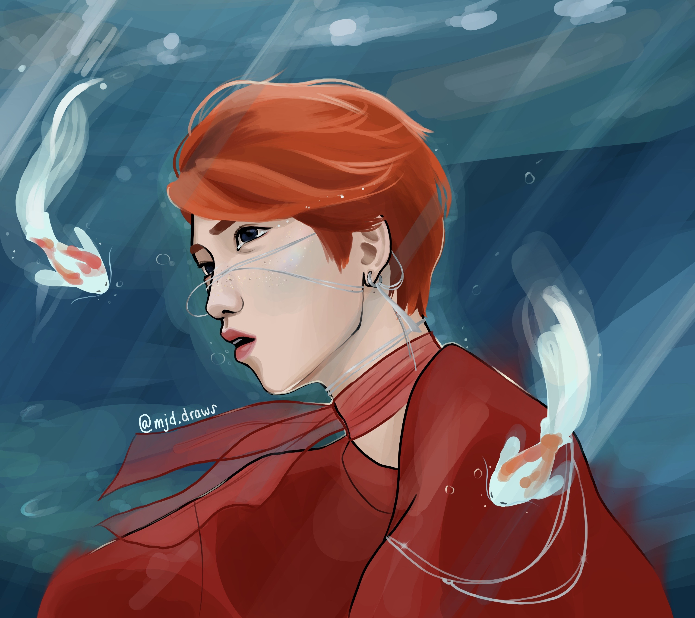
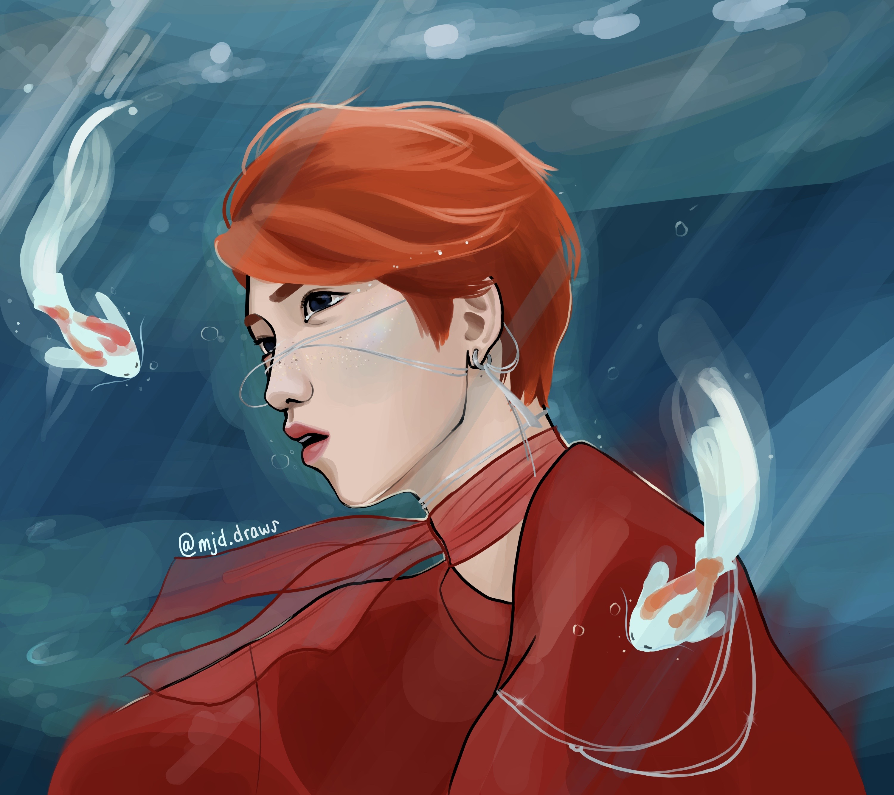
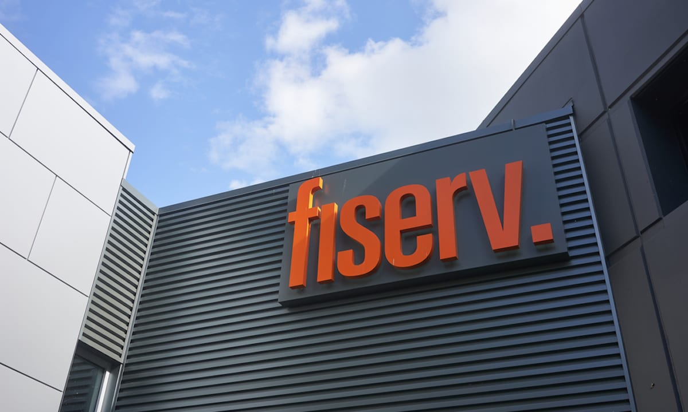

Student Ambassador
As an ambassador, I act as a liaison between the college and prospective students and their families I work as a recruiter, educator, communicator, and coordinator of tours and information sessions. A few events that I help to organize and participate in are: Shadow Day, Preview Tech, Family Weekend, etc. I also help to design merch and promotional items like buttons and stickers to give out during our events. This semester I will also be helping our college's recruiter advisor
Spring 2021
 

In the Spring semester of my freshman year, my final project for my visual design class was rebranding a local business. I chose to rebrand one of my favorite local coffee shops: Momo Cafe.
Rebranding Project
Spring 2021
In the Spring semester of my freshman year, my final project for my visual design class was rebranding a local business.